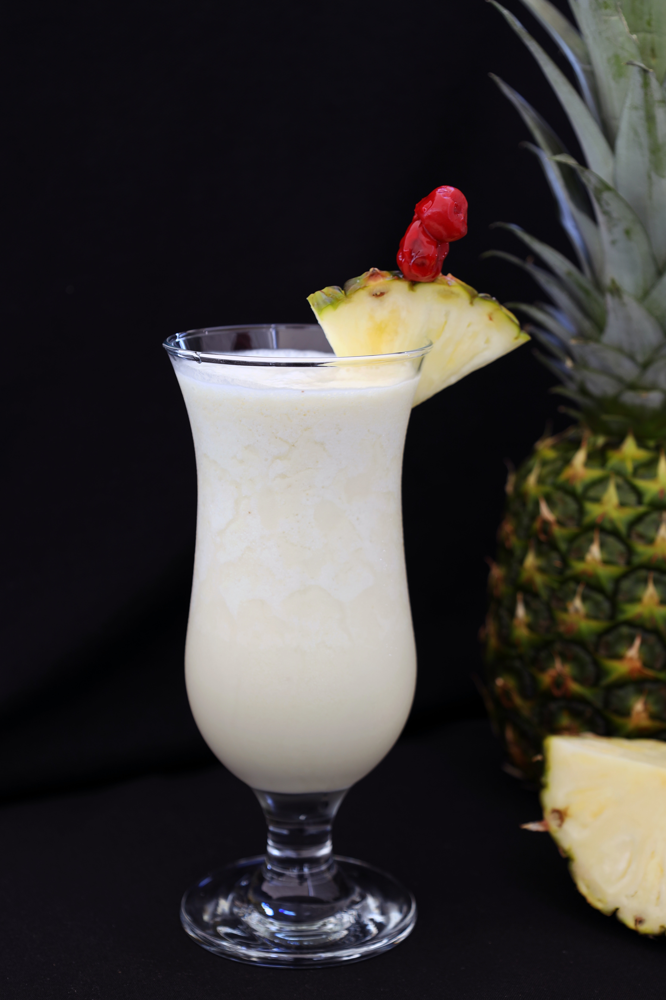

Las bebidas preparadas y tragos de los bartenders derivan de algunas recetas sencillas con tequila,
ginebra, ron o vodka. Se dice que si un barman puede hacer una margarita, daiquiri, una piña colada y un martini,
debe ser capaz de hacer casi cualquier bebida coctelera que se le pida.

Mai Tai:
La palabra «maitai» significa «bueno» en tahitiano, y la bebida fue inventada supuestamente en un restaurante polinesio en la década de 1940.
Es una de las bebidas preparadas con ron blanco. Además lleva ron oscuro, naranja «curaçao», jugo de piña, jarabe de azúcar y jugo de limón.
A veces, se agregan jarabes de albaricoque y/o de almendra.
Caipirinha:
El ingrediente principal de esta famosa bebida brasileña es cachaça,
un espíritu similar al ron que se hace de la caña de azúcar fermentada. Es un cóctel sencillo:
una lima se corta en trozos y se agrega en un vaso con el azúcar. El hielo triturado se añade al vaso y luego se vierte la cachaça.
Daiquiri:
Los daiquiris pueden hacerse con casi cualquier fruta. Son una bebida preparada con ron.
Los daiquiris de fresa, plátano y melón son muy populares, así como los daiquiris congelados donde se llena el vaso con hielo picado.
La receta original es simplemente ron blanco, jarabe de azúcar y jugo de limón combinado en una coctelera y vertido en un vaso de martini frío.

Piña Colada:
La piña colada es la bebida nacional de Puerto Rico. Contiene ron blanco, coco, crema y jugo de piña. Se sirve en un vaso grande con hielo picado.

Long Island Ice Tea:
A pesar de su nombre, este cóctel no contiene té. Vodka, tequila, ginebra, ron, triple sec,
y un poco de coca-cola se vierte en una coctelera y se mezcla a fondo antes de verter en un vaso alto.
A veces, también se agrega jarabe de azúcar o «mezcla de dulce y amargo» (una mezcla de jugo de limón y azúcar).

White Russian:
Un White Russian (ruso blanco) es una de las bebidas preparadas con vodka. La receta lleva:
vodka, licor de café, y Bailey; todo mezclado. El hielo puede ser añadido.
Esta bebida se llama así porque su ingrediente principal es el vodka, aunque se cree que se originó en los EE.UU.